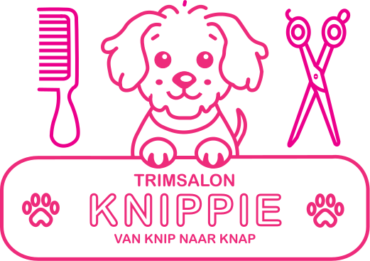
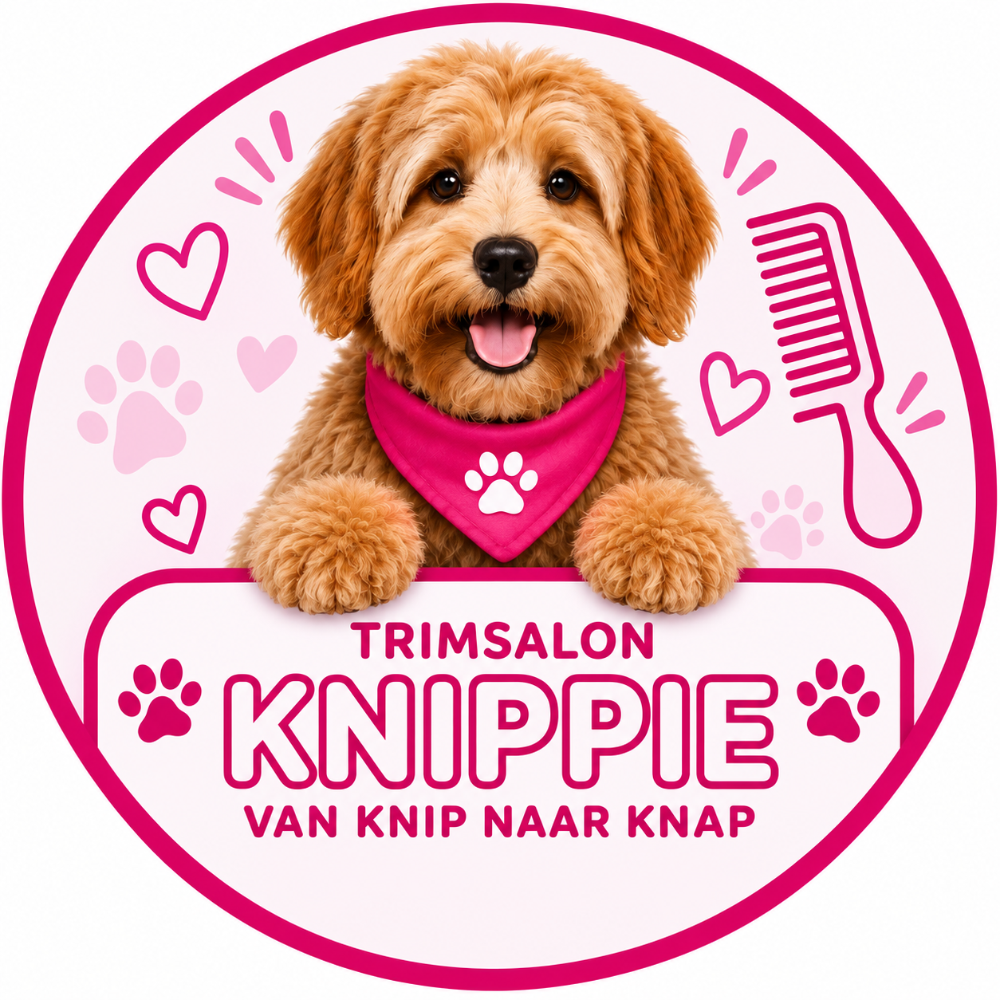
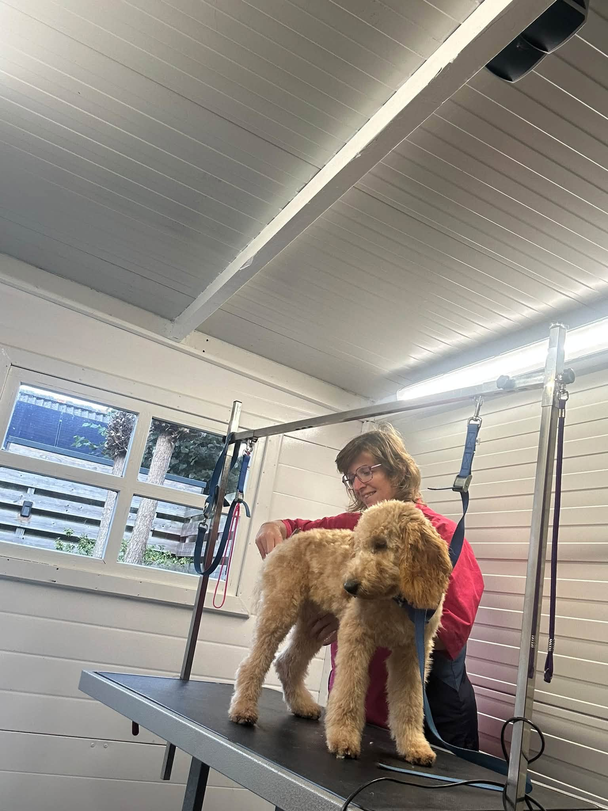
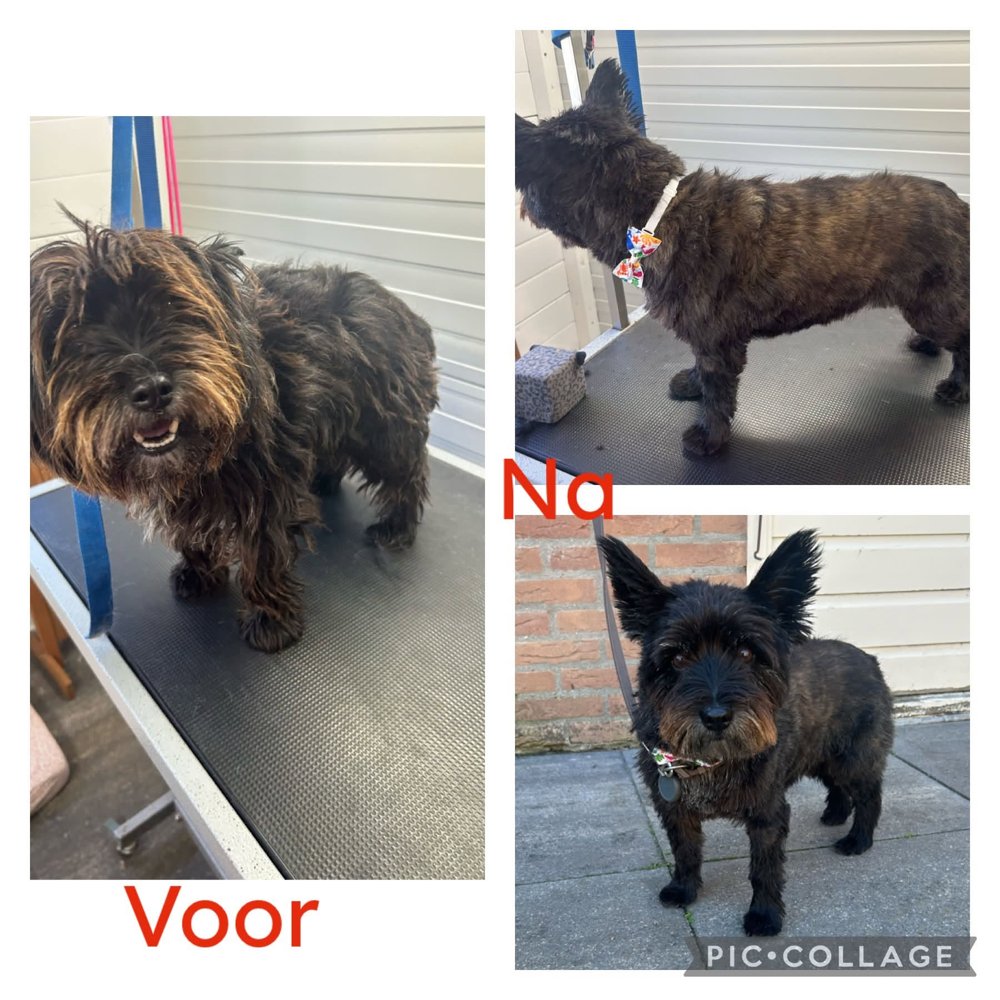
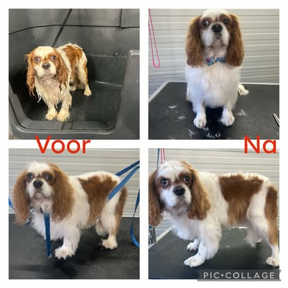
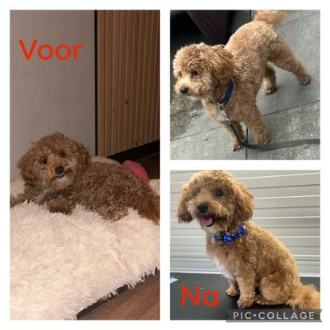
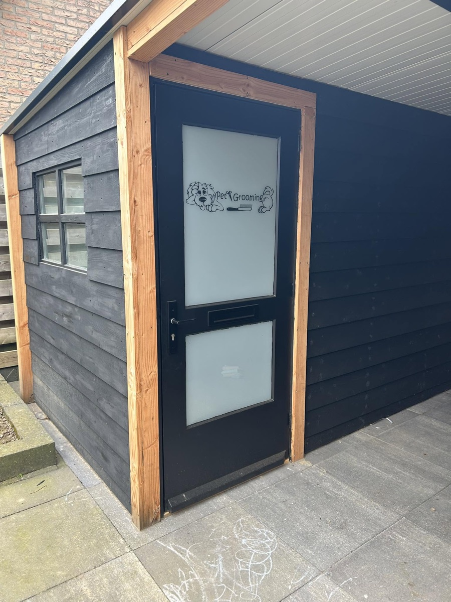

Knippen & trimmen
Elke hond is uniek.
Ook elke vacht is uniek.
Bij trimsalon Knippie kijk ik wat uw hond nodig heeft aan vachtverzorging en pas ik de juiste methode toe.

Van knip naar knap.
Bij Trimsalon Knippie in Opijnen krijgt jouw hond de verzorging die bij zijn vacht past.

Geen vacht is hetzelfde. De juiste verzorging begint bij wat jouw hond nodig heeft. Dit zijn onderwerpen om met Trimsalon Knippie te bespreken.
Elke hond is uniek.
Ook elke vacht is uniek.
Bij trimsalon Knippie kijk ik wat uw hond nodig heeft aan vachtverzorging en pas ik de juiste methode toe.
Ook wassen en borstelen zijn een belangrijk onderdeel van een trimbehandeling om de vacht mooi, gezond en klitvrij te houden.
Een rustige kennismaking met de trimsalon. Je pup kan wennen aan de omgeving, aanraking en verzorging. Bespreek met Trimsalon Knippie wat bij jouw pup past.
Een fijne vacht vraagt ook thuis om aandacht. Neem je vragen over borstelen en onderhoud mee naar de salon.

Trimsalon Knippie is een trimsalon in Opijnen. Een plek waar de verzorging van jouw hond centraal staat.
Een frisse vacht, een passend model en aandacht voor je viervoeter. Dat is het idee achter de naam van mijn trimsalon én mijn slogan: van knip naar knap.
Maak kennis met de salonHondjes voor en na hun behandeling bij Knippie.



Bekijk meer van onze knapperds op Facebook (opent in een nieuw tabblad)

Je vindt Trimsalon Knippie aan De Richtershof 22 in Opijnen. Hier verwelkomen we jou en je hond voor een frisse vacht en persoonlijke aandacht.
De Richtershof 22Goed voorbereid naar de trimsalon.
Trimsalon Knippie is gevestigd aan De Richtershof 22, 4184 EW Opijnen, Nederland.
De prijs is afhankelijk van onder andere het vachttype, de grootte van je hond en de gewenste verzorging. Vraag bij Trimsalon Knippie naar de mogelijkheden en de prijs voor jouw hond.
Laat je hond vooraf even uit en vertel bij het maken van een afspraak over bijzonderheden, gevoeligheden of klitten. Overleg met Trimsalon Knippie of verdere voorbereiding nodig is.
Dat verschilt per hond en vachttype. Bespreek met Trimsalon Knippie welk ritme bij jouw hond past en hoe je de vacht tussendoor kunt verzorgen.
Voor vragen over de verzorging van jouw hond
kun je terecht bij Trimsalon Knippie.
Trimsalon Knippie
De Richtershof 22, 4184 EW Opijnen
KvK: 42050237
Bel Trimsalon Knippie06 2399 7163Telefoonnummer en e-mailadres volgen binnenkort.